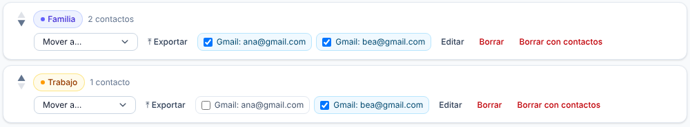
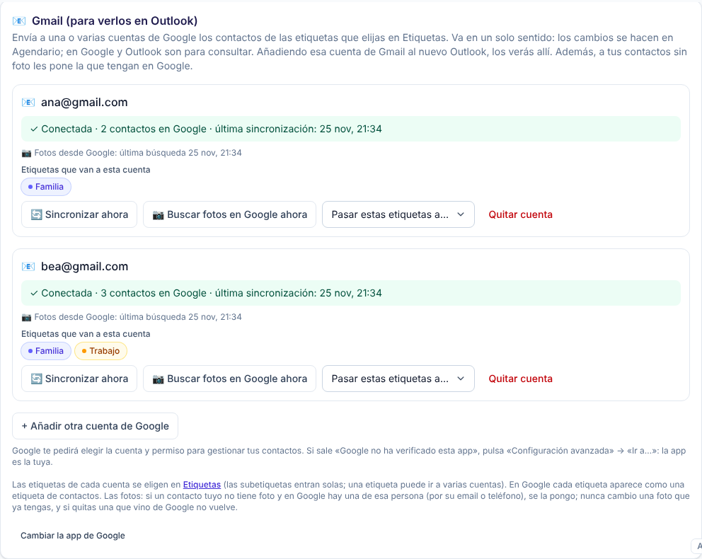
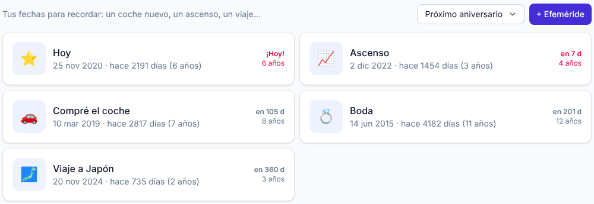

11Novedades de la versión 1.3.1
La 1.3.1 permite enviar los contactos a varias cuentas de Google, trae de Google las fotos que les faltan a tus contactos, cambia el nombre de «Novedades» a Changelog y ordena las efemérides por la próxima que llega.
Varias cuentas de Google
- En Ajustes → Sincronización → Gmail cada cuenta tiene su recuadro. Con «+ Añadir otra cuenta de Google» (desde la web) conectas otra: Google te deja elegir con cuál entras. Si vuelves a conectar una que ya estaba, se renueva y no sale repetida.
- En Etiquetas, cada etiqueta tiene una casilla por cuenta («Gmail: tu@gmail.com»). Una etiqueta puede ir a una cuenta, a varias o a ninguna; las subetiquetas entran solas. Con una sola cuenta, la casilla sigue llamándose «Sincronizar con Gmail».
- La cuenta que tenías conectada en la 1.3.0 sigue igual, con sus etiquetas y sus contactos, sin volver a subir nada.
- Pasar estas etiquetas a… (desplegable en cada cuenta): todas sus etiquetas pasan a otra cuenta. Agendario crea los contactos en la nueva y los quita de la antigua. Sirve para el día en que sustituyas una cuenta por otra.
- Quitar cuenta pregunta si borras también de Google los contactos y etiquetas que creó Agendario o los dejas allí.
⚠️ Si cambias una cuenta por otra, no copies sus contactos con herramientas de Google o Microsoft: saldrían duplicados. Pasa las etiquetas de cuenta y deja que Agendario los cree.

Etiquetas: una casilla por cada cuenta de Google.

Ajustes → Sincronización → Gmail con dos cuentas.
Fotos desde Google
Si un contacto de Agendario no tiene foto y en alguna de tus cuentas de Google hay una de esa persona, Agendario la descarga y se la pone.
- De dónde sale: de un contacto que ya tuvieras en esa cuenta de Google (no de los que creó Agendario) o de la foto de perfil que la persona tenga en su cuenta de Google. Si hay las dos, gana la del contacto. Las fotos genéricas de Google (la inicial sobre un círculo de color) no se traen.
- Cómo reconoce a la persona: por un email o un teléfono que coincida, buscando entre todos tus contactos (no solo los de las etiquetas sincronizadas). Si un teléfono o un email encaja con varios contactos, o un contacto tiene varias fotos distintas en Google, no se toca: mejor sin foto que con una equivocada.
- Cuándo: sola cada 15 minutos, al conectar una cuenta y con el botón «📷 Buscar fotos en Google ahora», que dice cuántas ha añadido.
- Nunca cambia una foto que ya tengas. Y si quitas una foto que vino de Google, no vuelve.
- Queda apuntado en el historial del contacto («Foto traída de Google»). Si el contacto se sincroniza con Google, la foto viaja después hacia allí como cualquier otra.
Changelog en el menú
- «📋 Novedades» se llama ahora 📋 Changelog y lleva tu versión en el propio nombre: Changelog 1.3.1. Está en el menú (web) y en «Más» (app), justo antes de Salir.
Efemérides por la próxima que llega
- En Fechas → Efemérides salen primero las que antes cumplen aniversario (las de hoy, las primeras), luego la siguiente, y así todas. Las que ya han pasado este año van al final, por su aniversario del año que viene.
- Es el orden por defecto («Próximo aniversario»); en el desplegable sigue «Más recientes». También se ordenan así en el recuadro de efemérides de la ficha del contacto.

Efemérides: hoy, dentro de 7 días, dentro de 105…